| SchemaSpy Analysis of crss.settlement - Utility Tables | Generated by SchemaSpy |
| Generated by SchemaSpy on Tue Jun 27 11:05 PHT 2017 |
| |||||||||
 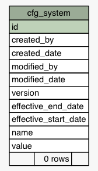
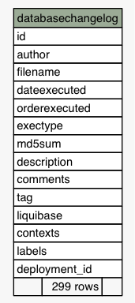
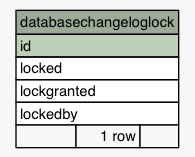
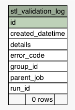
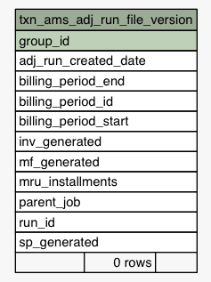
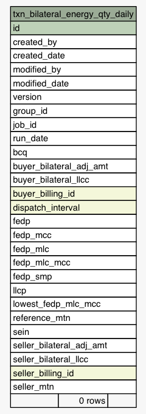
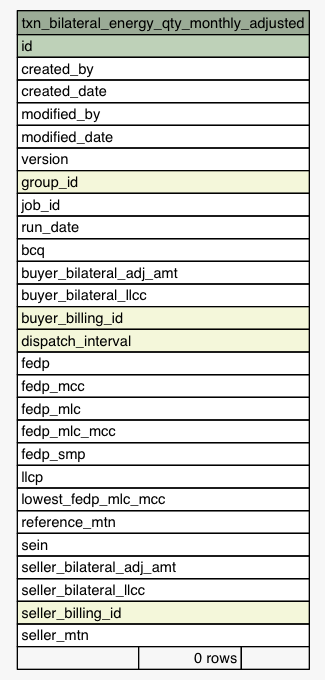
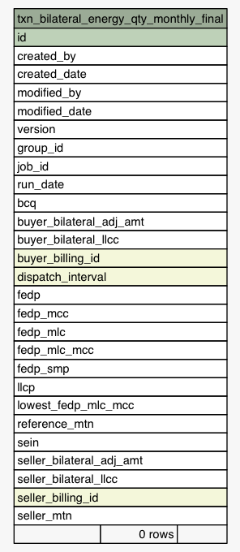
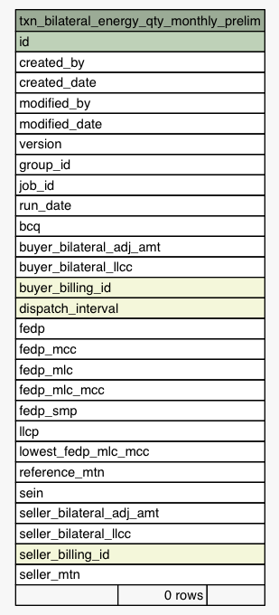
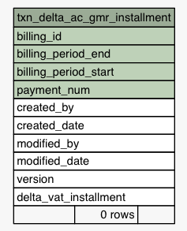
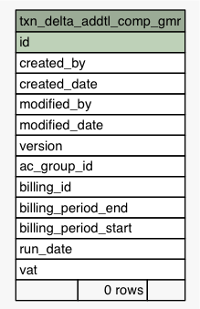
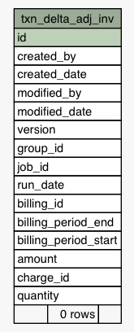
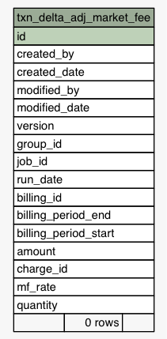
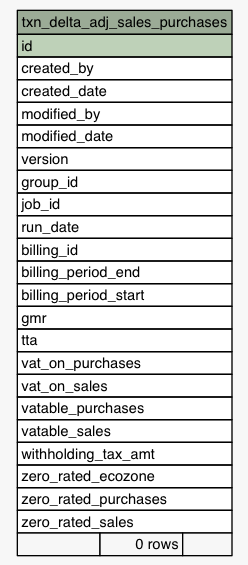
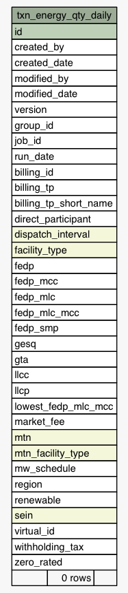
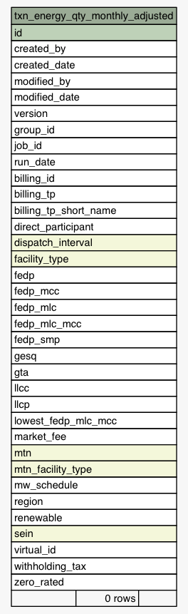
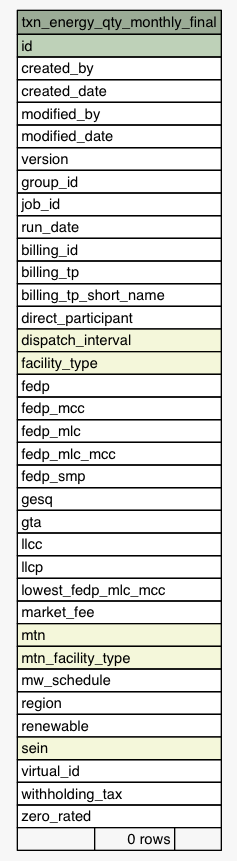
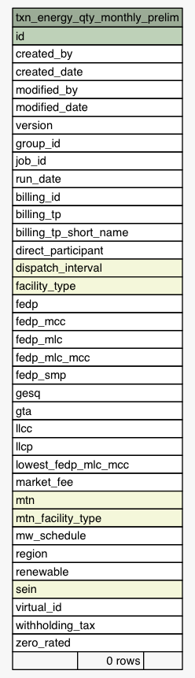
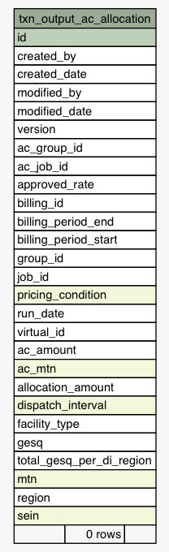
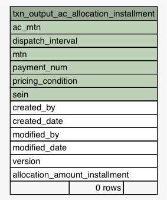
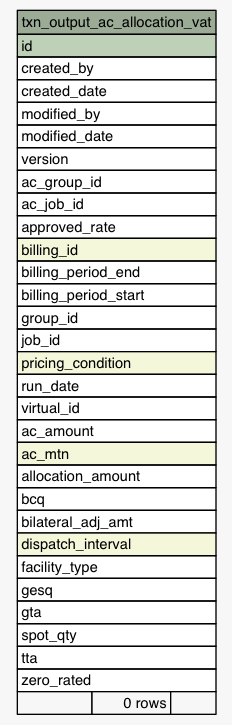
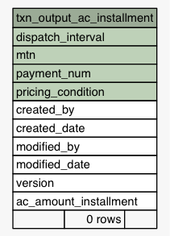
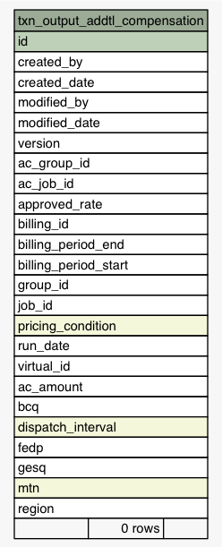
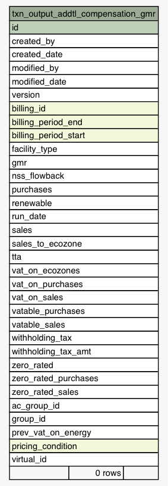
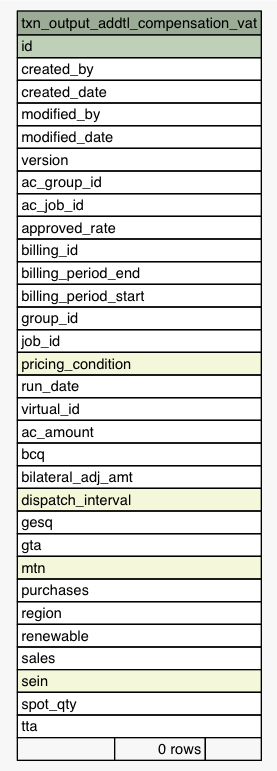
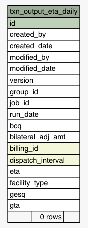
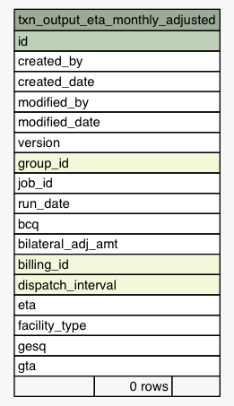
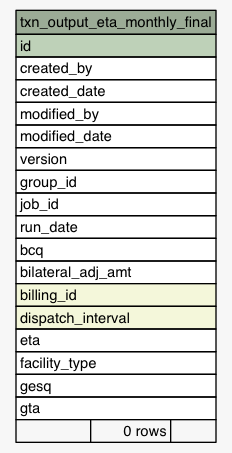
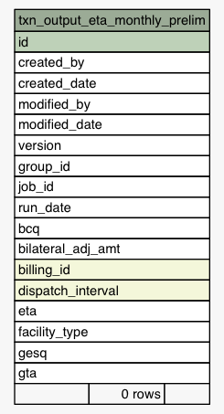
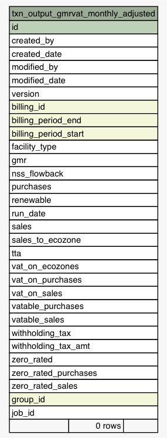
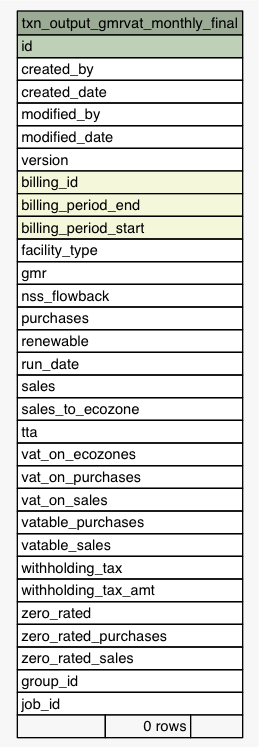
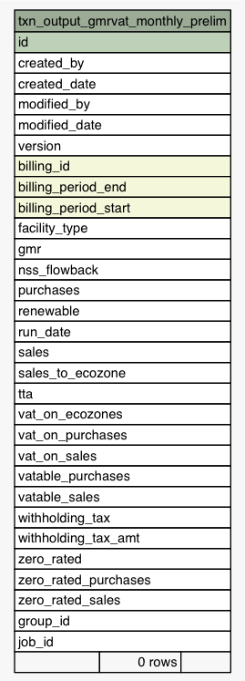
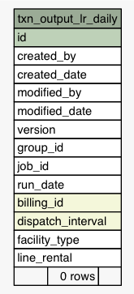
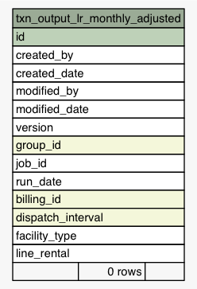
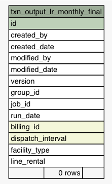
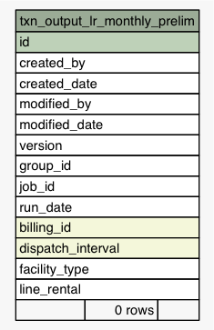
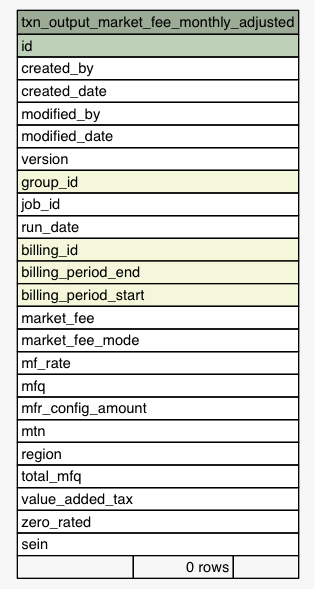
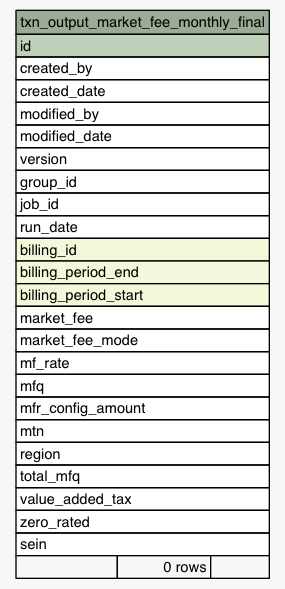
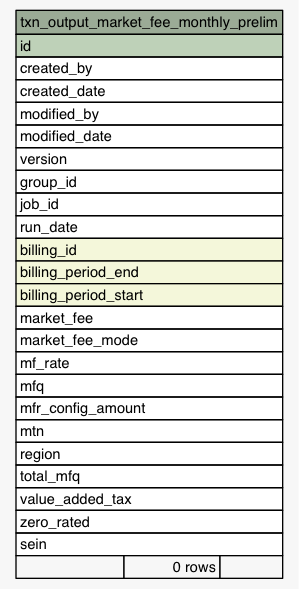
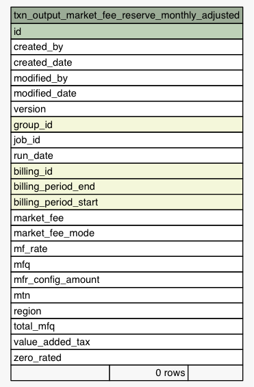
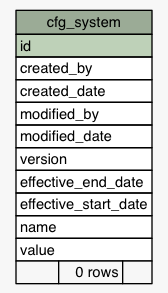
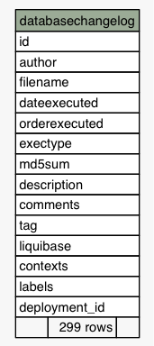
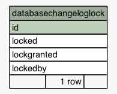
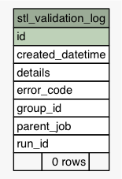
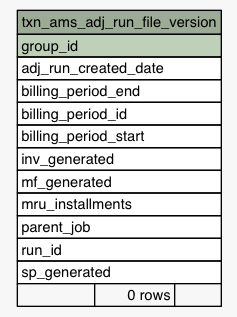
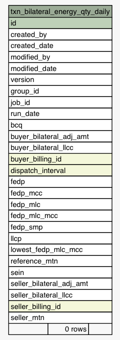
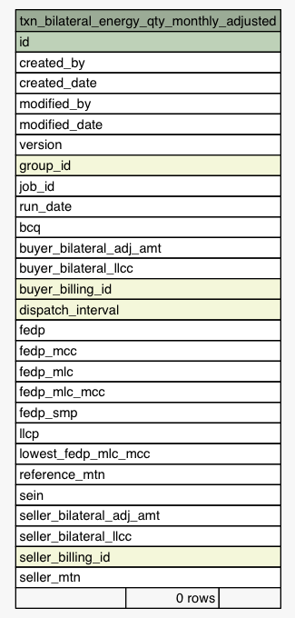
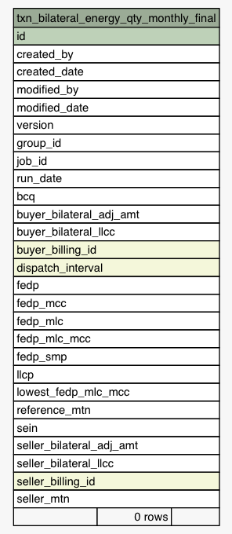
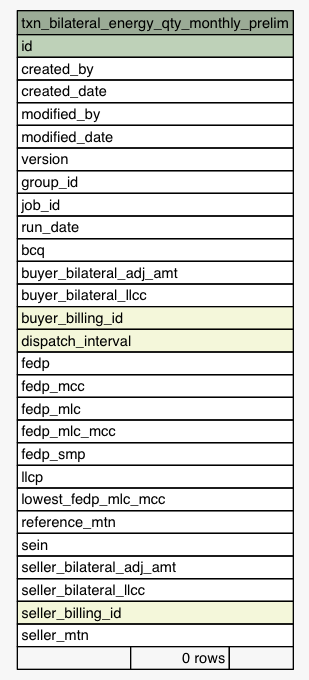
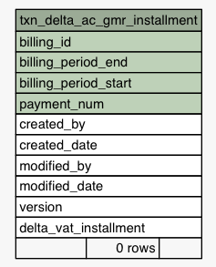


 


